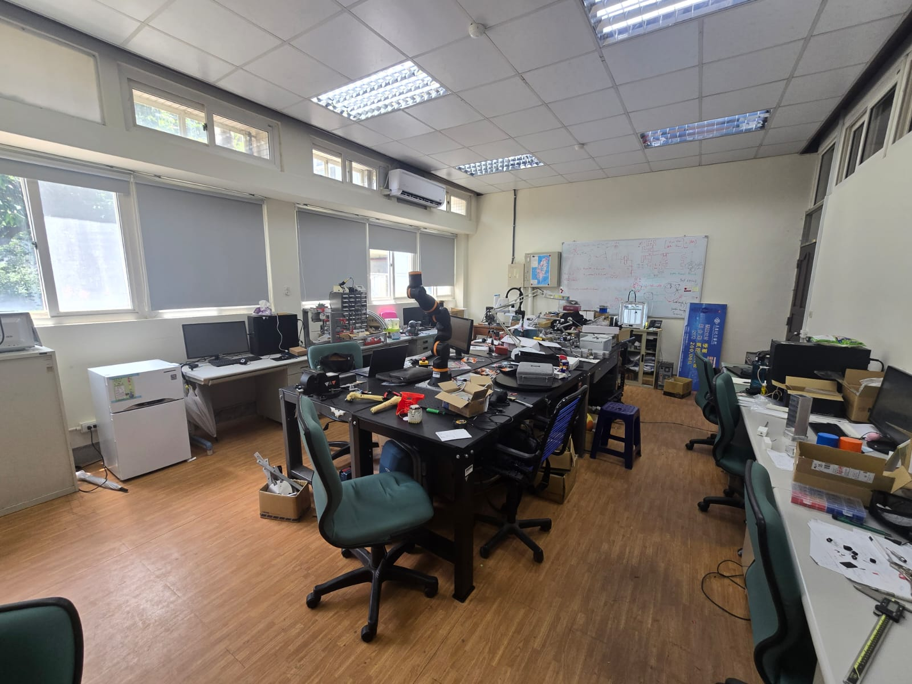
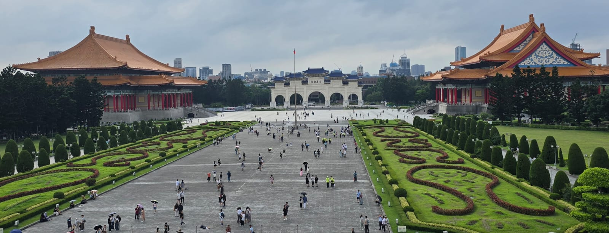
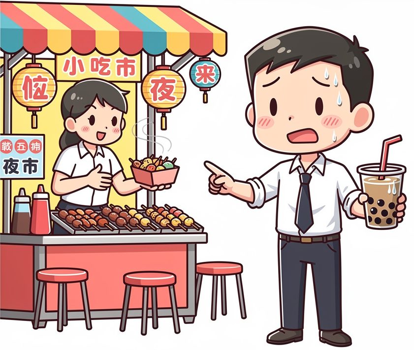
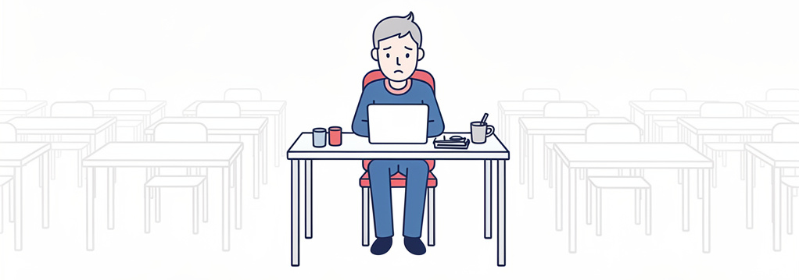
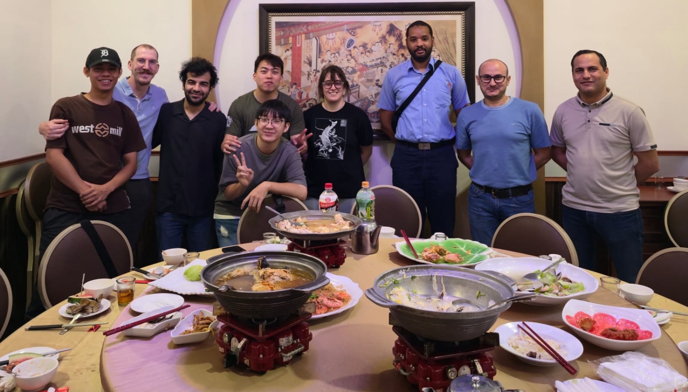

1. Context
My mission: wiring, cabling and integrating a SCARA robot — a fast, precise 4-axis robot — so that it can be used in future research projects and experiments in medical assistance.

Fig. 1 — The host laboratory at NCU campus, Taoyuan.
2. Taiwan at a Glance

CultureWork is life · Shy but caring people · Entrepreneurship everywhere · Not a tourist country

Social & LegalHealthcare · Tiny housing Protective state · exhausted people

Work PracticesIndividualistic: « sink or swim » · Little teamwork · cannon fodder

AcademiaThesis · work alone · Rare social life Little knowledge-sharing
3. Taiwan 🇹🇼 vs France 🇫🇷
| Aspect | Taiwan (what I saw) | France |
|---|---|---|
| Employment | Full employment; easy to open a small shop or restaurant | Job market tighter; strong unemployment benefits |
| Healthcare | NHI: dermatologist in 10 min, no charge without symptoms | Efficient, but longer waits |
| Teamwork | Everyone alone on their project; little mutual help | Group projects, shared knowledge |
| Social life | Restaurants only — no bars, no parties, no campus nights | Bars, student parties, campus life |
| Leave | ~1 week, rarely free to choose when | 5 weeks, freely chosen |
Sources: field observation, discussions with local colleagues, Hofstede Insights & Commisceo country guides.
4. Situations I Experienced
Autonomy from day one"I worked on my own in the laboratory — no micro-management. Freedom to organize my own schedule and solve technical problems independently."
Lunch as a ritual"Every day at noon, the whole team went to the restaurant together. Social time was not optional — it was the heartbeat of the lab."
Silence in meetings"My early suggestions met with silence: disagreement was expressed indirectly. Feedback came later, one-to-one."
📷 [Photo: team dinner / lab team / an anecdotal scene]
Fig. 2 — Building trust through shared meals: a key part of lab life at NCU.
5. My Professional Posture — Adaptations
- ✔Worked autonomously, reported smartly: alone on my delta-robot bench, I organized my own schedule and prepared clear progress updates for my supervisor — proactive reporting replaced daily supervision.
- ✔Joined the daily lunch ritual: sharing the team's noon restaurant meals built trust and unlocked help, advice and equipment access far faster than working alone.
- ✔Adjusted my communication: I proposed ideas one-to-one with indirect phrasing rather than openly challenging habits in meetings — while keeping French rigour in wiring standards and safety checks.
- ✔Managed international logistics: visa, health insurance and travel admin handled in advance; technical documentation read in English to close the gap with local practices.
6. Key Takeaways
- Intercultural competence is a real engineering skill: adapting your communication is as important as your technical work.
- Trust precedes tasks in Taiwan — taking time for people accelerates projects.
- Two cultures, one goal: combining French critical thinking with Taiwanese harmony made the project succeed.
🗺️ [Insert your map France→Taiwan or a photo of the delta robot / your wiring work]
Fig. 3 — The delta robot after integration: a 3-month international project.